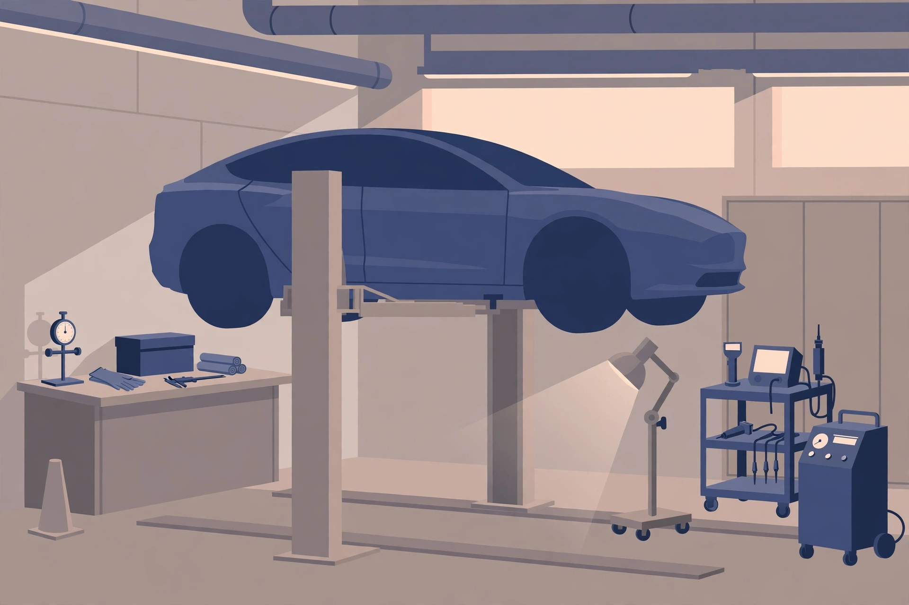

車検の選択肢を調べていると、ディーラーや整備工場へ依頼する方法のほかに、車の使用者本人が検査場へ車両を持ち込む「ユーザー車検」という言葉を目にすることがあります。「自分で持ち込むと費用の仕組みはどう変わるのか」「どのような準備や手順が必要で、どんなリスクがあるのか」を事前に正しく知っておきたい方も多いはずです。
結論から整理すると、ユーザー車検は事前予約制のもとで本人が運輸支局（軽自動車は軽自動車検査協会）へ車を持ち込んで継続検査を受ける方式です。業者へ支払う「車検基本料（検査代行手数料）」がかからない構造である一方、法定費用（自動車重量税・自賠責保険料・検査手数料）は業者車検と同様に発生します。そして何より重要なのは、道路運送車両の保安基準に適合する点検・整備が行われていることが大前提である点です。
本記事では、ユーザー車検の費用構造と法定費用の基準額、予約・書類準備から当日の検査コース通過までの具体的な手順、整備知識がない場合のリスクや業者依頼との中立的な比較軸まで順を追って整理します。
この記事のポイント（ユーザー車検の結論と前提）
- 制度の基本：本人が平日に運輸支局・軽自動車検査協会へ車両を持ち込む方式（予約制）。保安基準に適合する整備が前提となる
- 費用の構造：業者への車検基本料はかからないが、法定費用（重量税＋自賠責保険料＋検査手数料）は必ずかかるほか、保安基準適合のための点検・整備・部品交換の実費が必要
- 検査手数料の注意点：印紙・証紙代は 1,800円前後（工場の種別で変わる）が目安だが、指定整備工場経由（1,800円前後）に対し、持ち込みとなるユーザー車検では 2,200円前後になる場合がある
- すぐ試算したい方へ：車両区分・重量・経過年数別の法定費用基準額は車検費用シミュレーターおよび車検費用の全体像まとめでご確認いただけます。
ユーザー車検とは？業者車検との費用構造と役割の違い
一般的な業者車検（ディーラー・車検専門店・民間整備工場など）では、「法定24か月定期点検・整備」と「継続検査の手続き・完成検査」を事業者が一括して引き受けます。これに対しユーザー車検は、点検・整備の手配から検査場への持ち込み・書類提出・検査ラインの通過までを使用者本人が行う方式です。
※業者への車検基本料は発生しませんが、法定24か月点検と保安基準適合の整備が前提となります。
業者に依頼する場合とユーザー車検とで、どの費用が共通で、どの部分の扱いが変わるのかを比較表で確認しましょう。
| 費用・作業の区分 | 業者に依頼する車検 | ユーザー車検（本人持ち込み） | 差が出る理由・注意点 |
|---|---|---|---|
| ① 自動車重量税 | 法定額（同額） | 法定額（同額） | 車両区分・重量・経過年数・エコカー減税の有無で定まる国税 |
| ② 自賠責保険料 | 基準料率（同額） | 基準料率（同額） | 24か月契約で普通車18,560円／軽自動車18,660円 |
| ③ 検査手数料 （印紙・証紙代） |
指定整備工場：1,800円前後目安 認証工場：2,200円前後の場合あり |
2,200円前後になる場合がある （工場の種別・申請方式で変わる） |
現車を国の検査コースに通す区分となるため、指定工場経由より数百円前後高くなる場合がある |
| ④ 車検基本料・ 検査代行手数料 |
事業者ごとに設定（目安） | 発生しない（本人が手続き・受検するため） | 平日の移動時間・書類作成・検査ライン通過の労力を本人が負担する |
| ⑤ 点検・整備・ 部品交換費用 |
見積もりに基づき工場で実施（目安・整備内容で変動） | 車両状態に応じた実費が必要 （自己点検＋必要な部品代や工場への個別整備依頼費） |
整備費用がゼロになるわけではない。保安基準不適合箇所や消耗品の整備は必須 |
法定費用の基準額目安（13年未満・エコカー減税なしの例）
参考として、本サイトのシミュレーター基準（重量税＋自賠責24か月＋指定工場基準の手数料1,800円）における法定費用合計例と、一般的な業者車検の総額目安（二次情報ベース）は以下のとおりです（※ユーザー車検で検査手数料が2,200円前後の区分となる場合は、下記合計例より数百円前後加算されます）。
- 軽自動車：法定費用例 27,060円（18年経過は 29,260円） ／ 一般的な車検総額目安：6万〜9万円
- 普通車 〜1.0t：法定費用例 36,760円 ／ 一般的な車検総額目安：8万〜12万円
- 普通車 〜1.5t：法定費用例 44,960円 ／ 一般的な車検総額目安：9万〜14万円
- 普通車 〜2.0t：法定費用例 53,160円 ／ 一般的な車検総額目安：10万〜16万円
業者車検の総額目安との間に差がある理由は、事業者が担っている「国家資格整備士による点検工賃」「測定機器による事前調整」「検査代行手続き」を本人が受け持つ構造になっているためです。したがって、部品交換が必要な車両や、事前に整備工場で24か月定期点検を受ける場合は、その分の整備費が法定費用に上乗せされます。
大前提として知っておきたい「保安基準への適合」と法定点検の義務
ユーザー車検を検討するうえで決して誤解してはならないのが、「車検に通ること＝今後2年間の安全性が保証されたことではない」という点と、「保安基準に適合する整備が前提である」という点です。
国の検査場で行われる継続検査は、あくまで「検査を受けたその時点において、車両が道路運送車両の保安基準を満たしているかどうか」を外観・測定機器等で確認する手続きです。たとえばブレーキパッドの残量が検査当日に基準ギリギリであれば検査自体は通過できる場合がありますが、数か月後に摩耗限界を迎えて制動力が損なわれるリスクは防げません。
また、道路運送車両法では自動車の使用者に対し、適切な保守管理と法定24か月定期点検の実施を義務付けています。
- 整備知識や適切な工具を持たないまま見よう見まねでブレーキ周りや足回りを分解することは大変危険であり、重要保安部品の分解整備には本来しかるべき知識・設備が求められます。
- 保安基準を満たさない整備不良の状態で無理に検査を通そうとしたり、基準を回避するような一時的な処置を行ったりすることは法令違反であり、重大な事故につながるため絶対に行ってはなりません。
- 機械面の点検に不安がある場合は、認証工場や指定整備工場に「法定24か月定期点検と必要な整備」だけを有料で依頼して定期点検整備記録簿を発行してもらい、検査場への持ち込みのみ自分で行うという堅実な方法もあります。
ユーザー車検の具体的な手順｜事前予約から当日の検査コースまで
ユーザー車検は有効期間満了日の2か月前から（次回満了日を短縮せずに）受けることができます。準備から当日完了までの流れを4つのステップで整理します。
ステップ1：法定24か月定期点検と事前整備の実施
受検前に灯火類（ヘッドライト・ウインカー・ブレーキランプ・番号灯などの点灯やレンズ割れ）、タイヤの溝・亀裂、ガラスの損傷、ワイパー・ウォッシャー液の動作、マフラーの排気漏れ、ブーツ類の破れ、オイルや冷却水の漏れ、警告灯の点灯有無などを点検し、不適合箇所や消耗箇所を確実に整備します。結果と整備内容は定期点検整備記録簿に記載します。
なお、ヘッドライトの光軸（照射の向き）やサイドスリップ（直進時のタイヤの横滑り量）などは目視だけでは分かりにくいため、当日の検査前に検査場近くの民間測定施設（いわゆる予備検査場・テスター屋）で測定・調整を受けてから本番ラインに臨む利用者も見られます（利用料金は施設や測定項目により異なります）。
ステップ2：Webでの検査予約（事前予約制）
ユーザー車検は事前予約制となっており、予約なしで当日持ち込んでも受検できません。また、検査場は原則として平日のみ開庁（土日祝・年末年始は閉庁）しています。
- 普通自動車・小型自動車：国土交通省の「自動車検査インターネット予約システム」から、管轄または最寄りの運輸支局・自動車検査登録事務所の空き枠（ラウンド）を予約します。
- 軽自動車：「軽自動車検査予約システム」から、軽自動車検査協会の事務所・支所の空き枠を予約します。
3月などの繁忙期や月末は予約枠が早く埋まりやすいため、満了日に余裕を持ってスケジュールを組みましょう（時期の確認は車検の時期・有効期間・満了日の確認方法を参照）。
ステップ3：必要書類の事前確認と準備
当日に検査場へ持参する主な書類・持ち物は以下のとおりです。
| 用意するもの | 入手先・確認ポイント |
|---|---|
| 自動車検査証（車検証） | 原本を持参（電子車検証の場合はICタグ付き原本と記載事項確認の準備） |
| 定期点検整備記録簿 | 法定24か月点検を実施し、点検結果を記入したもの |
| 自動車損害賠償責任保険証明書 | 現在有効な旧証書と、次回車検期間をカバーする新証書（24か月契約等）の2通が必要（新契約は検査場近隣の窓口や保険代理店で当日手続きも可能） |
| 自動車税・軽自動車税の納付確認 | 滞納がないことが必須。オンライン納付確認（JNKS／軽JNKS）に対応しているが、納付直後の場合は領収証書（納税証明書）原本の持参が必要 |
| 申請書類一式（当日窓口・Web） | 継続検査申請書、自動車重量税納付書、自動車検査票（検査場の窓口・記載台またはWeb入力で作成し、購入した重量税印紙・検査登録印紙を貼付） |
ステップ4：当日の受付から検査コース通過・新車検証の交付まで
- 窓口手続き：予約ラウンドの受付時間前に到着し、印紙・証紙の購入、自賠責保険の継続契約（未加入の場合）、申請書類の記入・確認を済ませてユーザー車検受付窓口へ提出します。
- 同一性・外観・灯火類の確認：検査コースの手前で検査官の指示に従い、車台番号・エンジン型式の照合、ウインカーやハザード・ブレーキランプ・ホーン・ワイパー等の動作確認、車内警告灯や発炎筒（有効期限等）、ホイールナットの緩み確認を受けます。初めて受検する場合はハザード点灯や窓口での申告により案内を受けられる検査場もあります。
- 検査コース（自動測定ライン）の通過：電光掲示板や音声案内に従って車両を前進させ、①サイドスリップ検査、②ブレーキ・駐車ブレーキ制動力検査、③スピードメーター誤差検査、④ヘッドライト光軸・光度検査、⑤排出ガス検査、⑥下回り打音・揺さぶり検査を順番に受け、各ポイントで検査票を記録器に通します。
- 総合判定と車検証・検査標章の受領：すべての項目で適合印が揃ったら総合判定窓口で確認を受け、書類提出窓口から新しい車検証と検査標章（フロントガラス貼付用ステッカー）を受け取って完了です。
ユーザー車検のリスク・注意点と業者依頼との向き・不向き
費用面の特徴だけでユーザー車検を選ぶと、思わぬ時間ロスや安全上のリスクを抱えることがあります。中立的な視点でデメリット・注意点も整理しておきましょう。
- 整備知識がない場合の見落としリスク：検査ラインを通過できたとしても、冷却水の劣化やブレーキフルードの吸湿、ベルト類のひび割れなど予防整備が必要な箇所を見落とせば、後日路上トラブルや高額修理につながる恐れがあります。
- 平日の時間確保と不適合時のやり直し負担：仕事等を休んで平日に持ち込む必要があり、万一光軸やブーツ破れ、排ガス値などで「不適合」となった場合は、当日中または限定検査期間内に整備・部品交換を行って再受検しなければなりません。その場で直せない故障が見つかると、結局整備工場へ預け直す二度手間が生じることもあります。
- 判断に迷ったときの比較方法：車の構造や日常点検に慣れており平日動ける方には選択肢になりますが、「点検整備の確実性を重視したい」「平日に時間を取れない」「経年車で交換部品がありそう」という場合は、車検専門店や民間整備工場などの事前見積もりを取って、差額と安心感・手間のバランスを比べてから決めるのが賢明です。
ユーザー車検と業者依頼の向き・不向き整理表
| 判断の視点 | ユーザー車検が選択肢になりやすいケース | 業者依頼（または整備工場での事前点検）が向いているケース |
|---|---|---|
| 点検・整備スキル | 法定24か月点検の項目を理解し、日常点検や軽微な消耗品管理を適切に行える | 機械的な点検・分解整備の知識や工具がなく、プロの診断で安全性を確認したい |
| スケジュール条件 | 平日の日中に検査場へ往復する時間（再検査時の予備時間を含む）を確保できる | 平日に休みを取るのが難しく、土日祝や短時間預かりで完了させたい |
| 車両のコンディション | 年式が比較的新しく、日頃から整備履歴を把握しており異常箇所がない | 初度登録から年数が経過している、異音や警告灯がある、前回車検で無交換箇所が多い |
民間工場との比較・見積書の見方・予約時期の関連ガイド
ディーラーや民間整備工場・車検専門店との体制比較は「依頼先5種別の違いと比較」、業者見積もりを取って手間とコストを比べる手順は「車検見積もり書の見方と比較手順」で確認できます。年度末の検査コース混雑対策は「車検の予約時期と繁忙期スケジュール」もご参照ください。
ユーザー車検に関するよくある質問（FAQ）
Q1. 整備の経験がまったくない状態でもユーザー車検は受けられますか？
A. 制度上、車両の使用者本人であれば受検資格に特別な免許（整備士資格等）は不要ですが、保安基準への適合と法定24か月点検の実施が前提となります。車両の点検知識がないまま受検することは安全面でも検査通過面でもリスクが高いため、事前に認証・指定整備工場で24か月定期点検を受けてから持ち込むか、業者車検を利用するほうが安心です。
Q2. 当日の検査コースで不合格（不適合）になった場合はどうなりますか？
A. 不適合となった箇所を整備・調整したうえで再検査を受ける必要があります。当日の受付時間内に調整が完了すれば再受検できる制度がありますが、部品取り寄せが必要な故障（ブーツ破れや灯火器破損など）の場合は後日の再受検手続きが必要となり、追加の手数料や時間的負担が発生する場合があります（再検査の回数上限や限定自動車検査証の有効期間等の細則は運輸支局の案内でご確認ください）。
Q3. 車検が切れている車でもそのまま運転してユーザー車検に持ち込めますか？
A. いいえ、車検が切れた車両は道路運送車両法により公道を走行できません。自走して検査場へ向かうには、あらかじめ有効な自賠責保険に加入したうえで、市区町村役場で臨時運行許可（仮ナンバー）の申請手続きを行うか、積載車で搬送する必要があります。
Q4. 軽自動車や251cc以上のバイクでもユーザー車検は可能ですか？
A. 可能です。軽自動車は「軽自動車検査協会」、251cc以上のバイク（小型二輪）は「運輸支局等」の二輪検査コースへ予約のうえ持ち込みます。それぞれの費用構造については軽自動車の車検費用およびバイクの車検費用の仕組みをご参照ください。
Q5. ユーザー車検の前に立ち寄る人がいる「予備検査場（テスター屋）」とはどのような施設ですか？
A. 運輸支局や軽自動車検査協会の周辺にある民間の測定・調整施設で、本番の検査ラインに入る前にヘッドライトの光軸やサイドスリップ（直進性）、ブレーキ制動力、スピードメーター誤差などを事前計測・調整してもらえる場所です。特に光軸ズレによる当日不合格を防ぐ手段として活用されるケースがあります。
まとめ｜保安基準適合を大前提に、手間・リスクと業者見積もりを比較しよう
ユーザー車検は、業者への車検基本料がかからない反面、法定費用（重量税・自賠責・検査手数料）は同額（手数料は2,200円前後の場合あり）で発生し、保安基準に適合させる点検整備と平日の受検手続きをすべて自己責任で担う方式です。まずは車検費用シミュレーターで法定費用の基準額を確認し、民間整備工場や車検専門店の見積額と手間・安全性を天秤にかけて判断してみてください。
- 全体像と試算を確認する：車検費用の全体像まとめ ／ 車検費用シミュレーター
- 法定費用と依頼先比較を見る：法定費用の内訳詳細 ／ 依頼先5種別の違い ／ 車検費用を抑えるポイント
- 時期・区分別の詳細を見る：車検の時期・有効期間の確認方法 ／ 軽自動車の車検費用 ／ 13年・18年経過の重量税
関連ガイド・試算ツールをカードから選ぶ
更新日・数値の確認方法について
- 最終更新日：2026年11月16日
- 執筆・編集：車検費用ナビ編集部
- 金額目安の算出・確認方針：本記事の法定費用合計例は自家用乗用車の継続検査（2年分）・13年未満・エコカー減税なしを前提とした基準データに基づいています。検査手数料（印紙・証紙代）は工場の種別や車両区分・申請方法によって変わり（指定整備工場1,800円前後、認証工場・ユーザー車検2,200円前後の場合あり）、また必要な点検整備・部品交換の実費は車両状態によって変動します。受検前には必ず管轄の運輸支局・軽自動車検査協会の最新案内をご確認ください。
関連ポリシー：数値目安の算出基準・出典確認フロー ／ 広告掲載ポリシー（#PR表記方針） ／ 運営者情報
出典・参考情報
本ページの数値・制度情報は、以下の公的機関・公式情報に基づいて確認しています。
- 国土交通省「自動車検査インターネット予約システム／ユーザー車検のご案内」
- 軽自動車検査協会「ユーザー車検のご案内／軽自動車検査予約システム」
- 国土交通省「検査・登録手数料一覧」／自動車技術総合機構「自動車の登録・検査の法定手数料」
- 道路運送車両法・自動車の点検及び整備に関する手引
※上記出典は2026年11月16日に確認しました。